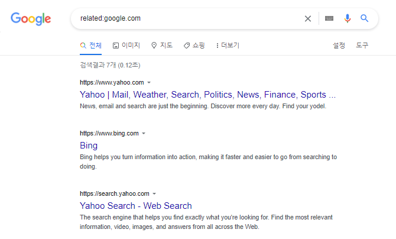

2. 구글 검색명령어.
| site: | 명령어 뒤에 원하는 사이트의 주소(URL)를 입력하는 경우, 구글에 색인된(indexed) 페이지가 모두 표시됩니다. 구글 서치 콘솔에서 사이트맵을 업데이트 했거나, 새로운 페이지 및 글이 업데이트 되었는지 등을 확인할 때 유용합니다. (예: site:google.com) |
| intitle: | 제목(Title Tag)에 검색어가 포함된 결과 값만 보여줍니다. (예: intitle:구글 검색법) |
| related: | 검색되는 URL과 연관된 웹사이트 결과 값을 보여주는 명령어 입니다. (예: related:google.com) |
